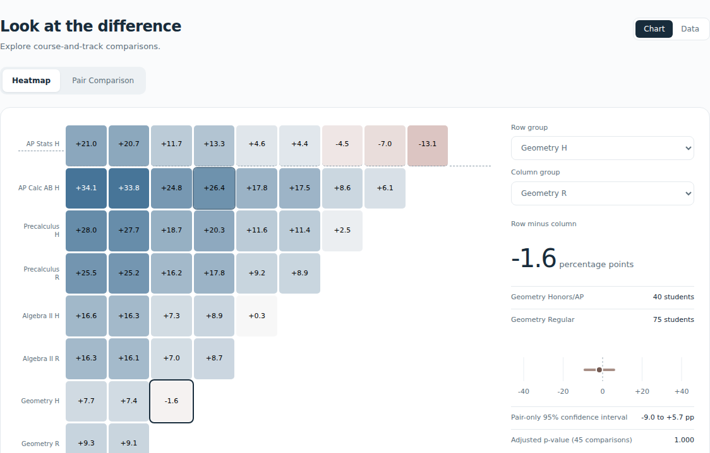

Logos Education Group / Reporting & analytics
Assessment Intelligence
Assessment analysis across 500 fictional students, 21 classes, and 30 mathematics questions. Interactive distributions, course comparisons, and question-level results connect statistical evidence to instructional follow-up.
As founder and builder of Logos Education Group, my work includes the statistical analysis, reporting workflow, interpretation, validation, and interactive presentation.
Interactive reporting
The web report brings courses, classes, comparisons, and content areas into one workspace. Filters, chart and data views, and distribution details let readers inspect the evidence behind a finding.

Design and analysis
My contribution spans assessment design, statistical analysis, data validation, interpretation, and the web reporting experience. The portfolio dashboard also exposes course distributions and question-level results from the reviewed reporting bundle.
45 exploratory pairwise Welch comparisons use a separate Holm adjustment family. Mean differences and uncertainty remain visible; inconclusive results do not imply equivalence. One synthetic administration cannot establish growth, teaching effects, or validated placement cutoffs.
Earlier warehouse implementation and source lineage
The report-aligned dashboard is implemented in the portfolio repository and imports the reviewed Logos reporting bundle. It does not claim that the Logos data passed through the earlier dbt pipeline.
The separate longitudinal demo, R report, and public Assessment Intelligence repository retain the earlier SQL/dbt/DuckDB workflow and its original data. They are separate demonstrations.
Projects Qualification / Historical August 2026 warehouse snapshot
Strongest education-data architecture candidate once the dbt check is relocatable. Static artifacts are reviewable now, but a live interview rebuild and public feature must use the repaired, release-synchronized commit.
The August 2026 relocation qualification describes an earlier warehouse snapshot, not this report dashboard. The warehouse repository documents dbt parity and release-candidate verification; this report alignment does not certify a fresh warehouse rebuild or establish that its published artifacts match a later source revision.
Safety Boundary
Synthetic by design
Public artifacts must not include real student names, emails, IDs, grades, rosters, LMS exports, submissions, or private school reporting artifacts. Canvas is treated as one possible adapter, not the project identity.